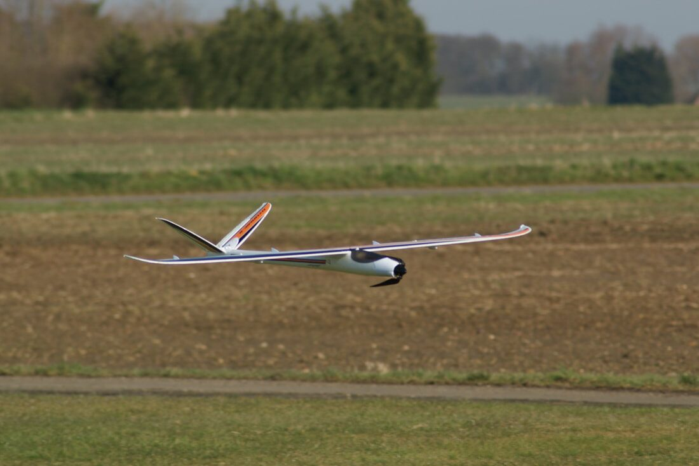
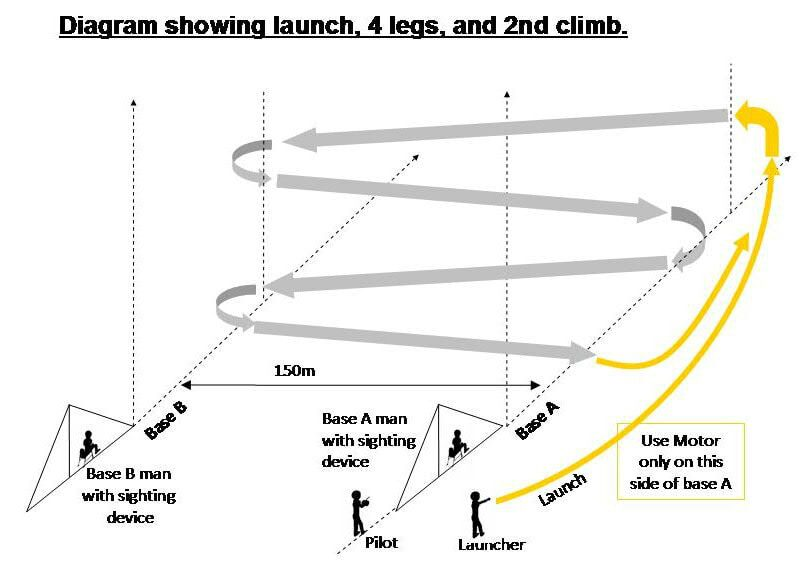

Competitive electric glider racing, flown fast.
F5B UK is home to the UK's F5B community — high-performance electric glider racing combining distance, duration and landing in a single flight. Newcomers always welcome.
What is F5B?
F5B is a multitask FAI competition class for radio-controlled electric gliders (often called "hotliners"). Three tasks — Distance, Duration and Landing — are completed in a single flight, rewarding both raw speed and precise flying.
Newcomers are always welcome at our competitions, and you don't have to be a top-class pilot to join in. Although there's strong competition for the top few places, there's always time to help a newcomer and guide them through their first flight on the F5B course. Any electric glider can be used for your first few visits — bring what you have, or come along to watch, learn, and have a friendly chat.
We work closely with the BMFA and FAI to promote F5B in the UK.

Have a Go Events
Trial flights on our 150m course, in a fun and friendly atmosphere — any BMFA member with any electric glider is welcome. £10 entry, no scores recorded, just bragging rights over your clubmates.
We've had Blazes, Dynamics, home-built designs, F3B electric and 4m machines on the course before — it's literally open to any electric glider. F5B pilots are on hand throughout the day to answer questions and give guidance on the optimal way to fly the event.
How the course works: imagine you're standing on the course at base A. Launch and climb away to your right, then turn back towards base B and switch the motor off before you cross base A again. Glide fast and straight towards base B, then about 150m out, turn and head back towards base A. Keep the pattern going — most pilots fly 4 legs to each climb. It feels different once you're on the proper course with the base "buzzers" sounding — if you don't hear the buzzer, you turned too early! You'll soon get the hang of it, and the practice will sharpen your flying skills generally.

Kit & Equipment
You don't need expensive kit to have a go — here's what actually matters as you get into F5B.
Planes
From current FAI favourites like the Avionik B-series and Speedfire 2, to affordable second-hand beginner models — see what's flying.
Browse planes →Batteries
You don't need expensive batteries — just enough performance and run time to complete the flight, kept warm before you fly.
Battery guidance →Data Logging
Not essential to start, but a data logger helps refine motor performance — and you'll need one for FAI competition classes.
Logging guide →How F5B Works
One flight, three tasks. Here's the short version — full FAI rules and equipment limits are on the rules page.
Distance
200 seconds to complete as many 150m "legs" as possible. 10 points per leg. Motor can be used to climb (up to 10 times), but every leg must be flown with the motor off.
Duration
A further 600 seconds (10 minutes) airborne. 1 point per second aloft, minus 3 points per second of motor use, minus a point per second over 10 minutes.
Landing
Bonus points for landing near a pre-determined spot: 30 points within 5m, 20 within 10m, 10 within 15m of the nose.
UK League
The UK F5B League runs a series of events across the season, with a Beginners / Intermediate / Open F5B class structure so newcomers and experienced pilots alike have somewhere to compete. League placings are typically calculated from your best results across the season (e.g. best 4 from 6 events).

On the Course
Say Hello
Curious about F5B, want to come Have a Go, or just have a question? Drop us a line — we're a friendly bunch.
Join the mailing list
Stay in touch with the UK F5B Groups.IO list for news and event announcements.
Visit Groups.IO →RCGroups forum
Lots of background reading and community discussion on the RCGroups forums.
Visit RCGroups →